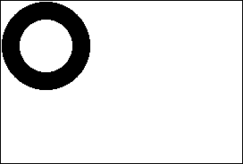
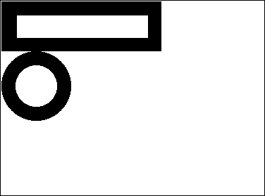
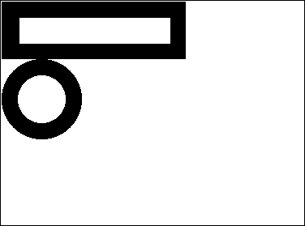
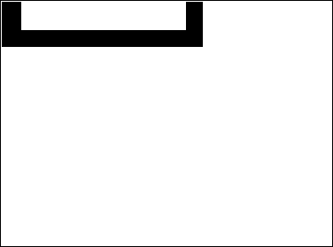
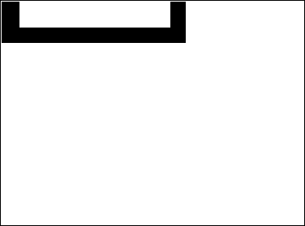

Picture
A Picture field, variable or expression can be any Windows or Macintosh picture. In general, this includes any picture that can be put on the pasteboard or read from the disk using 4D or Plug-In commands.
Native Formats Supported
4D integrates native management of picture formats. This means that pictures will be displayed and stored in their original format, without any interpretation in 4D. The specific features of the different formats (shading, transparent areas, etc.) will be retained when they are copied and pasted, and will be displayed without alteration. This native support is valid for all pictures stored in 4D: library pictures, pictures pasted into forms in Design mode, pictures pasted into fields or variables in Application mode, etc.
4D uses native APIs to encode (write) and decode (read) picture fields and variables under both Windows and macOS. These implementations provide access to numerous native formats, including the RAW format, currently used by digital cameras.
- Under Windows, 4D uses WIC (Windows Imaging Component)
- Under macOS, 4D uses ImageIO.
The most common picture formats are supported of both platforms: jpeg, gif, png, tiff, bmp, etc. On macOS, the pdf format is also available for encoding and decoding.
The full list of supported formats varies according to the operating system and the custom codecs that are installed on the machines. To find out which codecs are available, you must use the PICTURE CODE LIST command. Note that the list of available codecs for reading and writing can be different since encoding codecs may require specific licenses.
Note: WIC and ImageIO permit the use of metadata in pictures. Two commands, SET PICTURE METADATA and GET PICTURE METADATA, let you benefit from metadata in your developments.
Picture Codec IDs
Picture formats recognized by 4D are returned by the PICTURE CODE LIST command as picture Codec IDs. They can be returned in the following forms:
- As an extension (for example “.gif”)
- As a Mime type (for example “image/jpeg”)
The form returned for each format will depend on the way the Codec is recorded at the operating system level.
Most of the 4D picture management commands can receive a Codec ID as a parameter. It is therefore imperative to use the system ID returned by the PICTURE CODE LIST command.
Unavailable picture format
A specific icon is displayed for pictures saved in a format that is not available on the machine. The extension of the missing format is shown at the bottom of the icon. The icon is automatically used wherever the picture is meant to be displayed:

This icon indicates that the picture cannot be displayed or manipulated locally -- but it can be saved without alteration so that it can be displayed on other machines. This is the case, for instance, for PDF pictures on Windows, or for old pictures based on PICT.
Picture operators
| Operation | Syntax | Returns | Action |
|---|---|---|---|
| Horizontal concatenation | Pict1 + Pict2 | Picture | Add Pict2 to the right of Pict1 |
| Vertical concatenation | Pict1 / Pict2 | Picture | Add Pict2 to the bottom of Pict1 |
| Exclusive superimposition | Pict1 & Pict2 | Picture | Superimposes Pict2 on top of Pict1 (Pict2 in foreground). Produces the same result as COMBINE PICTURES(pict3;pict1;Superimposition;pict2) |
| Inclusive superimposition | Pict1 | Pict2 | Picture | Superimposes Pict2 on Pict1 and returns resulting mask if both pictures are the same size. Produces the same result as $equal:=Equal pictures(Pict1;Pict2;Pict3) |
| Horizontal move | Picture + Number | Picture | Move Picture horizontally Number pixels |
| Vertical move | Picture / Number | Picture | Move Picture vertically Number pixels |
| Resizing | Picture * Number | Picture | Resize Picture by Number ratio |
| Horizontal scaling | Picture *+ Number | Picture | Resize Picture horizontally by Number ratio |
| Vertical scaling | Picture */ Number | Picture | Resize Picture vertically by Number ratio |
Notes :
- In order to use the | operator, Pict1 and Pict2 must have exactly the same dimension. If both pictures are a different size, the operation Pict1 | Pict2 produces a blank picture.
- The
COMBINE PICTUREScommand can be used to superimpose pictures while keeping the characteristics of each source picture in the resulting picture. - The picture operators return vectorial pictures if the two source pictures are vectorial. Remember, however, that pictures printed by the display format On Background are printed bitmapped.
- Additional operations can be performed on pictures using the
TRANSFORM PICTUREcommand. - There is no comparison operators on pictures, however 4D proposes the
Equal picturecommand to compare two pictures. - 4D lets you retrieve the local coordinates of the mouse in a picture field or variable in case of a click or a hovering, even if a scroll or zoom has been applied to the picture. This mechanism, similar to that of a picture map, can be used, for example, to handle scrollable button bars or the interface of cartography software. The coordinates are returned in the MouseX and MouseY System Variables. The coordinates are expressed in pixels with respect to the top left corner of the picture (0,0). If the mouse is outside of the picture coordinates system, -1 is returned in MouseX and MouseY. You can get the value of these variables as part of the On Clicked, On Double Clicked, On Mouse up, On Mouse Enter, or On Mouse Move form events.
Examples
In the following examples, all of the pictures are shown using the display format On Background.
Here is the picture circle: 
Here is the picture rectangle:

In the following examples, each expression is followed by its graphical representation.
Horizontal concatenation
circle+rectangle ` Place the rectangle to the right of the circle
rectangle+circle ` Place the circle to the right of the rectangle


Vertical concatenation
circle/rectangle ` Place the rectangle under the circle
rectangle/circle ` Place the circle under the rectangle
 

Exclusive superimposition
Pict3:=Pict1 & Pict2 // Superimposes Pict2 on top of Pict1

Inclusive superimposition
Pict3:=Pict1|Pict2 // Recovers resulting mask from superimposing two pictures of the same size

Horizontal move
rectangle+50 ` Move the rectangle 50 pixels to the right
rectangle-50 ` Move the rectangle 50 pixels to the left

Vertical move
rectangle/50 ` Move the rectangle down by 50 pixels
rectangle/-20 ` Move the rectangle up by 20 pixels
 

Resize
rectangle*1.5 ` The rectangle becomes 50% bigger
rectangle*0.5 ` The rectangle becomes 50% smaller


Horizontal scaling
circle*+3 ` The circle becomes 3 times wider
circle*+0.25 ` The circle's width becomes a quarter of what it was


Vertical scaling
circle*/2 ` The circle becomes twice as tall
circle*/0.25 ` The circle's height becomes a quarter of what it was